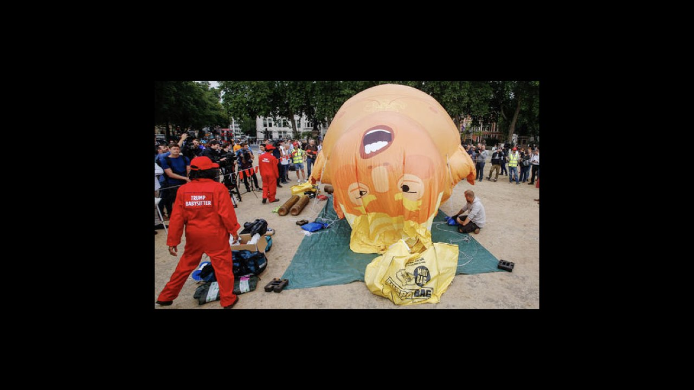
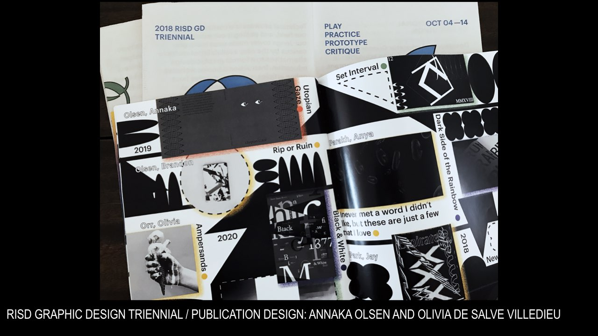

soulellis.com / writing / oct2018
Publishing as practice as resistance
A talk presented at the Boston Art Book Fair
October 13, 2018

I’m increasingly disappointed by so-called protest art, and a rhetoric that relies on humor, humiliation, and spectacle. Not that we don’t need laughing and crying. But parody and satire feel insufficient right now, even negligent. I don’t want to contribute to the entertainment factor, the instinct to fuel the addictive, sickening cycle of news surrounding the current administration.
Instead, I’m looking more and more towards critical writing, not visual art, for clues about how to deal with crisis, particularly around failure and futurity. How do we look forward, when our vision is blurred in a vertigo-like spell of confusion. How do we find new ways to construct culture, to imagine new societies, when the tools that we might use are restricted and bound up in systems of oppression. Caught up in ideologies that are historically defined by racism, misogyny, fear, and the production of capital in and around these forces. So I’ve been looking for help from writers and theorists.
The struggle is soothed somewhat by teaching, where I get a chance to engage in direct conversation with students and colleagues about how to sharpen our view, how to establish a critical practice that’s built on equity, inclusivity, and openness. This in itself feels like resistance. It doesn’t always work, but it seems like good work, and sometimes I’m surprised at how radical the results can be. Still, I’m yearning for more.
Recently, the graphic design department at the Rhode Island School of Design, where I teach, held its Triennial exhibition. It’s a major showcase for us, a slice through our department, where what we’ve accomplished is projected out into the RISD community for all to see. At this particular moment, I’m looking for evidence that students are preparing themselves to leave our school and continue some kind of good work, questioning all that they’ve learned, changing it, transforming culture by learning to produce it differently. The show was curated and designed by MFA students Joel Kern and Goeun Park.

Our students produced a publication for the event, which includes a selection of writing by several graduate students, as well as one undergraduate. I knew that the publication had come together during the space of a week, and this by itself was of interest to me—that an urgent act of publishing was possible, at least in speed, and that these students knew how to get it done.
The only undergrad student whose writing was included in this urgent act of publishing was Tiger Dingsun. His short text was printed on a newsprint poster designed by MFA student Annaka Olsen, and it stopped me in my tracks. The text is titled “The unbearable whiteness of being (a graphic designer).” It’s powerful because it’s an unresolved provocation, a protest piece embedded within the show itself. My read is that it expresses a struggle, from the position of an Asian-American queer student at an art and design school, to find their own voice as a graphic designer in relation to personal identity and societal oppression. It’s an open expression of frustration, a self-reflection that’s trying to work something out.
The text describes a relational negotiation between student, work, and institution, between his own work produced in school and the white environment that both enables and resists it. The piece is a critique, submitted to an exhibition that had the stated theme of inclusiveness. In response to the show, the text seems to say: inclusivity isn’t enough. When will we talk about whiteness and the white culture we operate in. It includes an expression of hope that white people will take on more of the work of critiquing white hegemony. Tiger says he sees “the spark of self-recognition in their eyes; it slowly renders a fire.”
I think of Fred Moten and Stefano Harney’s concept of the undercommons here, specifically this thought: that the undercommons is a place for subversive intellectuals to send out signals, to find each other and imagine new ways of seeing the future. And that in the undercommons the only relationship one can have to the university is to steal from it. To be in it, without being of it, and to actively use the institution’s resources without giving in to its values, which are inevitably tied up in complex histories of bias and profit. It’s a position I’m trying to sketch out myself, and I’m on the lookout for that recognition, both the self-recognition that slowly renders a fire in the eyes, as well as seeing, and acknowledging, those students who aren’t satisfied with the conventions of a good art and design education, on the lookout for others, peers, students—others out there in our queer orbits, trying to find their way through muddy waters.
I frequently confess to students that I’m not there to teach them anything, that we can learn from each other. I mention this particular critical text because it’s a sharp moment where I can admit to being energized, because a student coming out of our program (although any program, really) is doing this kind of digging, in a way that pierces the niceties of graphic design. So I’m hopeful, as Tiger says he is, but I’m also challenged, maybe directly so, to look back into my own eyes, and the eyes of my colleagues, as he suggests, to self-recognize within the institution, my own position and role as a white faculty member at a private art and design school in New England.
And I think: this is the best that an urgent act of publishing can do—to show up, to make an appearance in public, provoke, question established positions, and energize others. Not simply an affect or an appearance of good design, but discourse that digs, that stays in the eyes, long enough to start a fire. Discourse that asks us to read differently. Here, in this particular context, I ask myself directly: is my own work doing anything. Is it urgent enough? Is it grounded in, or in dialogue with, or foregrounded by crisis? Does it resist oppression in any way? Does it provide a platform for others who speak, write, or create from historically marginalized positions to express their points of view?
Where exactly does my own self-recognition expose itself—does my work allow it?
These questions make demands. These are demands that are evolving, demands I’m making of myself, and of the communities with which I engage. They don’t answer these questions, far from it. But they may allow for new kinds of work to happen. In this spirit, QUEER.ARCHIVE.WORK is a publication framed by these demands, which I believe are becoming more and more central to any discussion of urgent publishing, queer publishing, queering design, and what publishing as practice as resistance might mean.
DEMAND 1 Resist legibility.
This is an idea that I’m taking from Jack Halberstam, one of the contributors to QUEER.ARCHIVE.WORK, and the author of The Queer Art of Failure, as well as the introduction to Fred and Stefano’s book The Undercommons: Fugitive Planning & Black Study.
In an event that I organized at MoMAPS1 for the 2018 NY Art Book Fair, Jack declared it in this way: Become illegible. He spoke about this in relation to gender fluidity, ways of being outside the gender binary and cisnormativity, structures that are so firmly established in language and culture. And I’ve been thinking about how our surveillant state wants more and more to “read” our bodies clearly, reading us as agents of capital, as consumers, as laborers, as profit-producers—reading our faces and our bodies as clearly seen targets.
To remove clarity from reading is an intriguing strategy; it’s different from camouflage. It’s not necessarily about visibility, or becoming invisible, or hiding—the demand asks that we resist the capacity to be read clearly, as a political position. And this is a demand that’s difficult for me to make as a professor of graphic design—is it something I could ever possibly teach? Isn’t it in direct conflict with the canon and legacy of good design and communications?
What if we take this all the way, and talk about illegibility as a design strategy. I’m not sure it’s a valid idea, but I want to test it.
The clarity of a binary structure is an illusion. Rather than insisting on clarity we could go the other way, and expand the illusion. What would it mean to design a text using this strategy? Is there room in our vertiginous condition for illegibility, at a moment when truth is more and more difficult to recognize?
I think so. I imagine what it would be like to publish a text that can’t be ranked by google, or stored on dropbox, or hosted by godaddy. Or a collection of texts that can’t be read in any one order, or from any one perspective. The idea of bad typography, and no dominant read, reading that isn’t fixed. A variety of reads that are all equally valid.
In a recent conversation with Nick Konrad, one of my students, he called it “messy legibility.” Messy sense-making.
So maybe resisting legibility means encouraging—or creating—new kinds of reading. Close reading, imperfect, difficult reading, messy reading.
That brings me to the second demand.
DEMAND 2 Resist design perfection.
What kind of design strategies would we explore, or teach, to allow for the resistance of legibility? If we begin with legibility itself, designing for the perfect read means optimizing typographic structures and details in order to convey a preferred meaning. I think of hierarchy, and the most basic and accepted notions of understanding language that come from signaling the prioritization of one notion over another through a series of intentional design decisions.
The idea of constructing importance through the use of hierarchy. Wherever we can do this, we create the conditions for bias. A reading experience that doesn’t affirm hierarchy and notions of the subordinate, meaning that no author or artist exists in a secondary position—this is actually quite unusual. It’s difficult to find examples.
What would it look like to maybe not do away with hierarchy, but to explore it intentionally, to subvert it, to create a space—the space of a publication, or a page, or within a browser—where hierarchical demands aren’t as expected. Where the reader or viewer is given the agency to wander, to float, to make different kinds of decisions about where to look first. To arrive at a kind of understanding that isn’t based on rank and authority.
I also think of the craft in typography, and the emphasis we place on making language look good for optimal legibility. I enjoy a properly spaced word like anyone else. But if we kern—to space the letters—towards perfection (that’s what we teach), we’re striving for some ideal version of how language should present itself.
To correct the software and adjust for abled viewing, without gaps or odd letter combinations that take away from a clear, linear notion of understanding. I’d like to resist kerning. Is it possible that the un-kerned word is a queer word, a word that refuses to conform to western standards of correctness and good typography?
Sal Randolph, in this first issue of QUEER.ARCHIVE.WORK, writes that plain text is queer text. Ungarnished language that resists normative conventions and legacy systems. This makes so much sense to me. Plain text, unkerned text, text that works on its reader without the assertion of importance and hierarchy, and all of the legacy design values that come along with so-called correct design. I’m talking about how we train ourselves, and our students, to fall into place with normative design conventions, decisions based on conformity, assumptions about what constitutes good, consistent reading.
I’m also particularly interested in how binding works to maintain legacy systems of hierarchical distinction, and the fixed read. To bind materials together is to fix them, to physically tie parts together so that they can’t separate and become undone. To resist binding might mean to let different texts, authors, and perspectives intermingle, for order and authority to shift as the direction of reading changes.
It may even mean that individual pages or sheets can loosen, and come undone—I mean this literally, but also affectively—to change the read. The flexibility of the unbound folio, or the loose assemblage, isn’t such a radical notion.
We can find several examples in the history of the artist’s book where the reader is given more agency, to re-author the text. But how might we take this out of the realm of the alternative or the precious, exploring the loose assemblage as a political move as well as an artistic one—to loosen hegemonic order.
I’m also reminded that this is what we revere today as the pinnacle of design perfection. It’s also where we do a lot of our reading. The richest company in the world has asserted its design ideology into everyone’s pockets, giving us new standards for craft that seem other-worldly, even non-human. I don’t think it’s any accident that the DIY culture of art book fairs and artistic self-publishing has exploded in the last ten years, following the mass introduction of an aesthetic like this one in 2007.
GAFA (Google Facebook Apple Amazon) came into power during this time, and entirely new design industries, like user interface and user experience design, have been valorized and absorbed into art and design schools to feed the enormous workforce that’s needed to maintain a design ideology based on perfection at all costs.